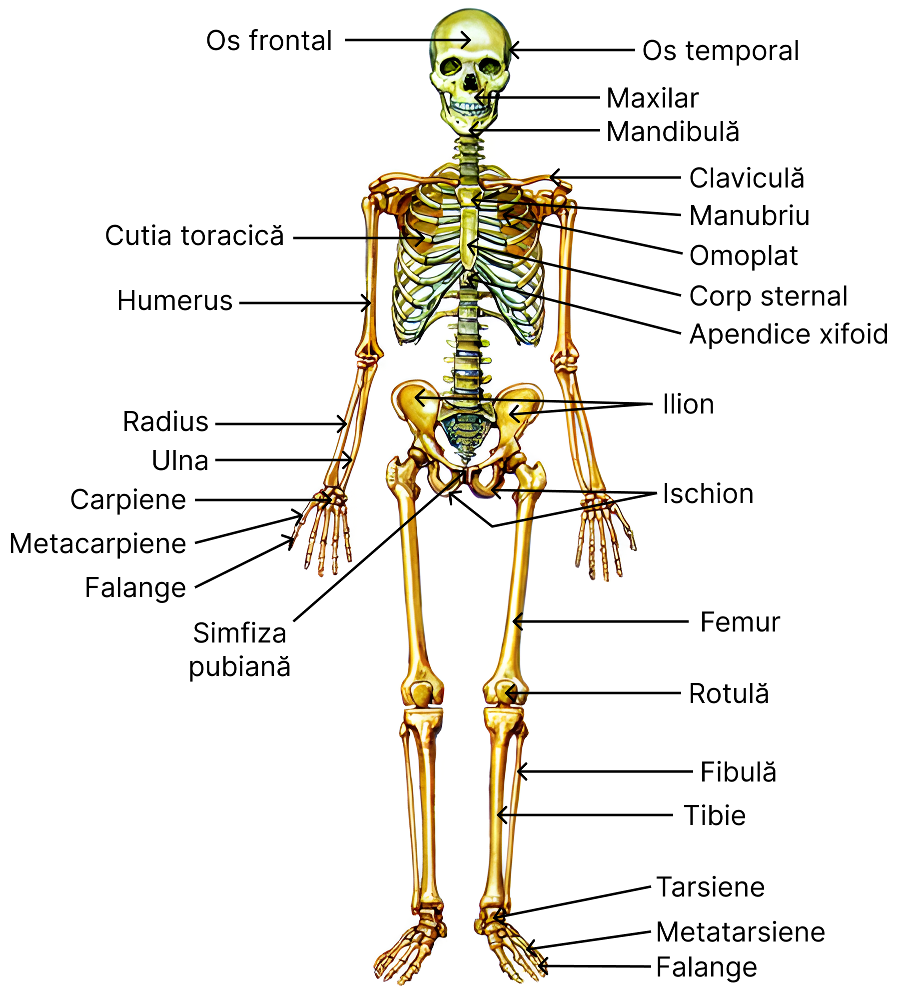

Ce este sistemul osos?
Sistemul osos reprezintă ansamblul organelor dure, oasele, care formează scheletul corpului uman. Acesta este parte pasivă a aparatului locomotor și, prin conexiunea cu mușchii și articulațiile, permite mișcarea.
2. Funcțiile sistemului osos
| Funcție | Descriere |
|---|---|
| Suport | Oasele susțin țesuturile moi, conferă forma generală a corpului |
| Mișcare | Oasele servesc drept pârghii pentru mușchii scheletici |
| Protecție | Craniul protejează creierul; cutia toracică - inima și plămânii; coloana - măduva spinării |
| Hematopoieză | Măduva osoasă roșie produce elemente figurate ale sângelui |
| Depozit mineral | Stochează 99% din calciu și fosforul organismului |
| Metabolic și hormonal | Secretă osteocalcină, hormon implicat în reglarea metabolismului |
| Antitoxic | Oasele pot reține metale grele/toxice și le eliberează lent |
3. Clasificarea oaselor
| Tip os | Caracteristici | Exemple |
|---|---|---|
| Oase lungi | Diafiză, epifize, canal medular | Femur, humerus |
| Oase plate | Subțiri, protecție, inserții musculare | Scapula, oasele craniului |
| Oase scurte | Dimensiuni egale, mișcări fine | Carpiene, tarsiene |
| Oase neregulate | Forme variate, funcții speciale | Vertebrele |
| Oase sesamoide | În tendoane, protejează și modifică direcția forței musculare | Rotula |
4. Structura osului
Diafiza
Partea centrală, compactă, cu canal medular
Epifize
Capete late, os spongios, cartilaj articular
Metafiza
Zonă de creștere în copilărie
Periost
Membrană vascularizată, creștere și reparație
Endost
Tapetează cavitatea medulară, conține celule osoase
Măduva osoasă
Roșie (hematopoieză), galbenă (rezervă grasă)
Os compact
Sisteme Haversiene (osteoni)
Os spongios
Trabecule, spații cu măduvă
Osteoblaste
Sintetizează matricea osoasă
Osteocite
Celule osoase mature
Osteoclaste
Resorbție osoasă
5. Scheletul axial
🧠 Craniu
8 oase neurocraniu
14 oase viscerocraniu
🦴 Coloana vertebrală
33–34 vertebre
(7C, 12T, 5L, 5S, 4–5Co)
🫁 Cutia toracică
12 perechi de coaste
+ stern
6. Scheletul apendicular
🦾 Centura scapulară
Scapula și clavicula
✋ Membre superioare
Humerus, radius, ulna,
carpiene, metacarpiene, falange
🦵 Centura pelviană
Oasele coxale + sacrum
🚶♀️ Membre inferioare
Femur, tibie, fibulă, rotulă,
tarsiene, metatarsiene, falange
7. Membre superioare
Funcție: Leagă membrul superior de scheletul axial, permite mobilitate mare a brațului.
Detalii: Os lung, se articulează cu scapula, radius și ulna; permite mișcarea brațului.
Funcție: Mișcări de rotație – pronație și supinație.
- Carpiene: 8 oase scurte – încheietura, mișcări fine
- Metacarpiene: 5 oase lungi – susțin palma
- Falange: 14 oase – degete, mișcări precise
• Prindere, manipulare, precizie
• Susținere musculară
8. Membre inferioare
| Segment | Oase principale | Caracteristici și funcții |
|---|---|---|
| Centura pelviană | Oasele coxale (ilium, ischium, pubis), sacrum | Leagă membrele inferioare de scheletul axial, suportă greutatea corpului. |
| Coapsa | Femur | Cel mai lung și rezistent os, suportă greutatea și permite mișcarea piciorului. |
| Gambă | Tibie (medială), Fibulă (laterală) | Tibia suportă greutatea; fibula oferă stabilitate laterală. |
| Genunchi | Rotulă (os sesamoid) | Protejează genunchiul, mărește forța mușchilor coapsei. |
| Picior | Tarsiene, Metatarsiene, Falange | Suport, echilibru și mobilitate în mers și alergare. |
Funcții principale:
- • Suportul și distribuția greutății corpului
- • Mobilitate și echilibru în mers, alergare și sărituri
- • Absorbția șocurilor
9. Scheletul trunchiului
Coloana vertebrală
Oase: 33-34 vertebre
Cervicale (7), Toracale (12), Lombare (5), Sacrale (5 fuzionate), Coccigiene (4-5 fuzionate)
Funcții: Susține capul și trunchiul, protejează măduva spinării, oferă mobilitate.
Cutia toracică
Oase: Stern, 12 perechi coaste
Funcții: Protecție pentru organele vitale, susținere musculară.
Funcții principale:
- Protecția organelor vitale și a măduvei spinării
- Susținerea și mișcarea capului și trunchiului
- Loc de inserție pentru mușchii trunchiului și membrelor
10. Articulații: clasificare
Fibroase
Țesut conjunctiv dens, fixă
Ex: Sutura craniuluiCartilaginoase
Cartilaj, mișcare limitată
Ex: Simfiza pubianăTipuri de articulații sinoviale:
- Sferoidale: Permite rotație în toate direcțiile. (Ex: Umăr, șold)
- Balama: Mișcare într-un singur plan. (Ex: Cot, genunchi)
- Pivot: Mișcare de rotație. (Ex: Atlanto-axială)
- Plane: Mișcări de alunecare. (Ex: Intercarpiene)
11. Osificare și regenerare osoasă
Osificare de membrană
Țesut fibros → os
Ex: oasele craniuluiOsificare endocondrală
Cartilaj → os
Ex: oasele lungiCreștere osoasă
Prin cartilaj epifizar și periost
Regenerare osoasă
Etape: Hematom → Calus → Os definitivat
Factori implicați
- Hormoni: GH, estrogeni, tiroidieni
- Vitamine: A, C, D
12. Afecțiuni ale sistemului osos
| Afecțiune | Descriere |
|---|---|
| Osteoporoză | Scădere densitate osoasă, risc fracturi |
| Frecventă la femei postmenopauză, tratament include aport de calciu și exerciții fizice. | |
| Fracturi | Rupturi osoase |
| Necesită imobilizare sau chirurgie, timpul de vindecare variază în funcție de gravitate. | |
| Rahitism / Osteomalacie | Deficit de vitamina D |
| Mineralizare deficitară a oaselor, cauzează deformări scheletice. | |
| Artrită | Inflamație articulară |
| Ex: poliartrită reumatoidă, simptome: durere, rigiditate, tratament medicamentos. | |
| Scolioză, Cifoza, Lordoză | Deformări ale coloanei vertebrale |
| Pot afecta postura și mobilitatea, tratament poate include kinetoterapie și/sau intervenții chirurgicale. | |
🦴 SISTEMUL OSOS — Hartă schematică
-
🔵 Trunchi
-
🟢 Coloana vertebrală
- 🟡 Vertebre cervicale (7) – susțin capul, permit mobilitate și rotație
- 🟡 Vertebre toracale (12) – atașament coaste, protejează organele toracice
- 🟡 Vertebre lombare (5) – suport greutate, flexibilitate trunchi
- 🟡 Vertebre sacrale (5 fuzionate) – susțin pelvisul
- 🟡 Vertebre coccigiene (4-5 fuzionate) – coadă vestigială, suport țesuturi moi
-
🟠 Cutia toracică
- 🟤 Stern – protejează inima și plămânii
- 🟤 Coaste (12 perechi) – protecție și mișcare respiratorie
-
🟢 Coloana vertebrală
-
🔴 Membre superioare
-
🟣 Centura scapulară
- 🔺 Scapula – fixare mușchi, mobilitate umăr
- 🔺 Clavicula – leagă membrul superior de trunchi
-
🟠 Braț
- 🔸 Humerus – pârghie pentru mișcarea brațului
-
🟠 Antebraț
- 🔹 Radius – rotație antebraț (supinație/pronație)
- 🔹 Ulna – articulație cot, stabilitate
-
🟠 Mână
- 🔹 Carpiene (8 oase) – mobilitate încheietură
- 🔸 Metacarpiene (5 oase) – susțin palma
- 🔸 Falange (14 oase) – dexteritate și prindere
-
🟣 Centura scapulară
-
🟣 Membre inferioare
-
🟢 Centura pelviană
- 🔺 Ilium – suport greutate, fixare mușchi
- 🔺 Ischium – suport șezut
- 🔺 Pubis – articulație simfiză pubiană
- 🔺 Sacrum – legătură coloana vertebrală-pelvis
-
🟠 Coapsă
- 🔸 Femur – suportă greutatea corpului, mișcare picior
-
🟠 Gambă
- 🔹 Tibie – suportă greutatea corpului
- 🔹 Fibulă – stabilitate laterală picior
-
🟠 Genunchi
- 🔹 Rotulă – protecție și pârghie mușchi coapsă
-
🟠 Picior
- 🔹 Tarsiene (7 oase) – formare boltei piciorului, absorb șocuri
- 🔸 Metatarsiene (5 oase) – suport în mers
- 🔸 Falange (14 oase) – echilibru și sprijin
-
🟢 Centura pelviană